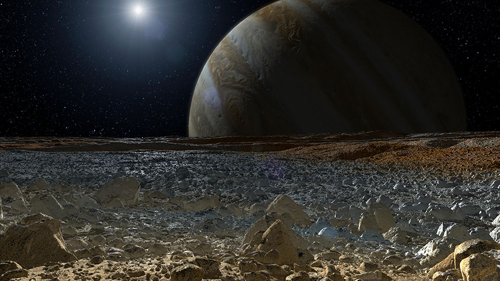
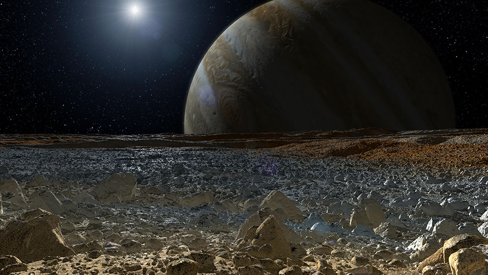
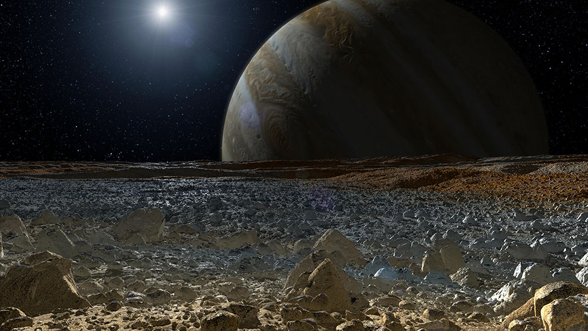
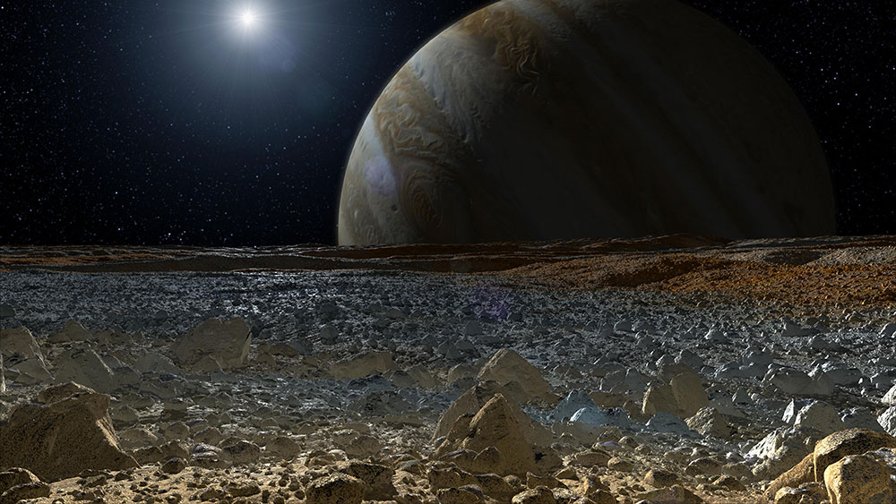

Јупитер е петтата планета од Сонцето и најголема во Сончевиот Систем.
Таа е гигант планета со маса една илјадитина од Сонцето, и 2.5 пати потешка од останатите планети во сончевиот систем заедно.
Јупитер и Сатурн се гасовити џинови; другите две гигантски планети, Уран и Нептун, се ледени џинови.
Јупитер им бил бознат на астрономите уште од антиката. Именувана е по Римскиот бог Јупитер.
Гледано од Земјата, Јупитер достигнува магнитуда од -2,94, доволно светла за нејзината рефлексија да фрла сенка,
правејќи го во просек третиот најсветол природен објект на ноќното небо по Месечината и Венера.